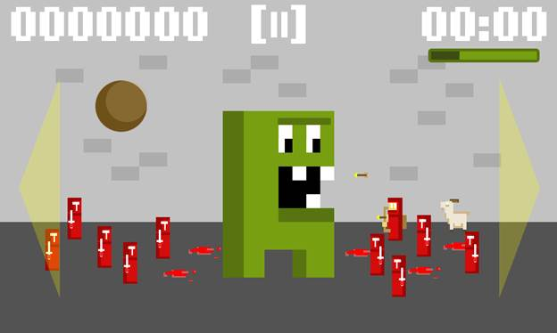
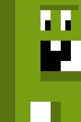
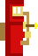
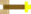
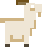

Welcome to Super Paper Monster Smasher LD25. Use your mouse or finger to have you’re Super Paper Monster attack by pressing the left and right side of the screen. Make sure to smash all of your opponents. Avoid flying arrows and cannon balls while trying to eat goats to heal yourself.
Click on the right or left side of the screen to make the Super Paper Monster jump in that direction.


Super Paper Monster – this is you.
Red Knight – takes away 1 point of life.

Red Archer – fires arrows.

Arrow – takes away 1 point of life.
Bolder – takes away 3 points of life. Weakens after bouncing.

Goat – restores 3 points of life.
Created by Jesse Freeman of Game Cook, inc.
This game was built using ImpactJS and requires any modern browsers capable of supporting Canvas and Audio such as IE 9+, Chrome, Firefox and Safari. Also optimized to run on mobile phones and tablets.